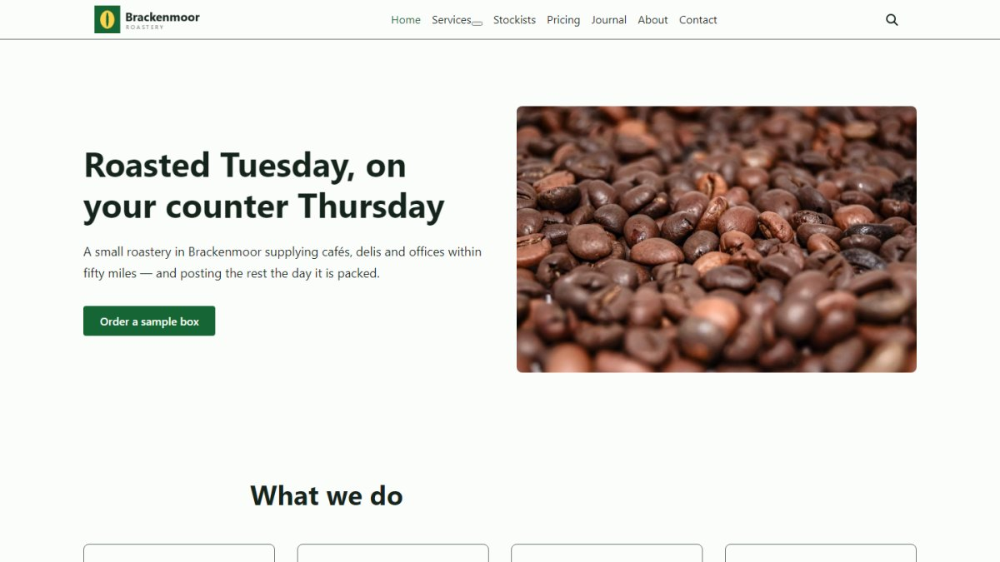
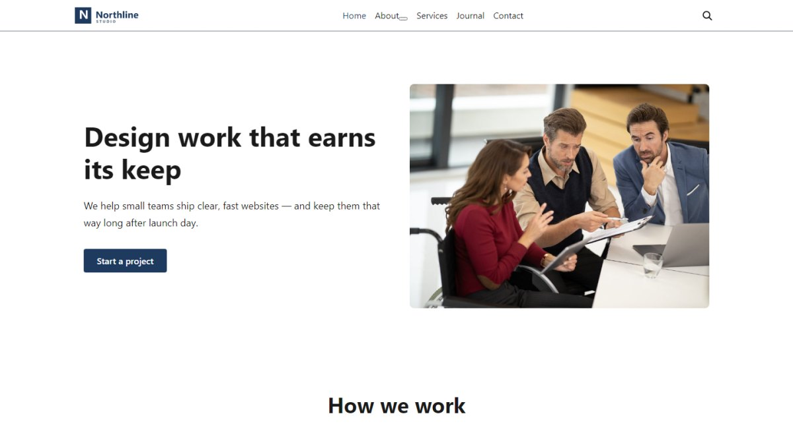

NewBusiness
Brackenmoor Roastery
A small coffee roastery that supplies cafés and offices: a ten-section homepage, a published price list, a services page with a child page under it, and a grid of the shops it supplies. The one demo that changes the theme's colours on import.

NewBlog
Fieldnotes
A personal journal of walking, writing and photographs: a typographic homepage, a blog with the sidebar on the left, a gallery page, and eight posts with comments. Text-led and deliberately quiet.

NewFeaturedBusiness
Creative Studio
A small design and development studio: a homepage built from the theme's own sections, an about page with the team, services, a six-post journal with comments, and a contact page.